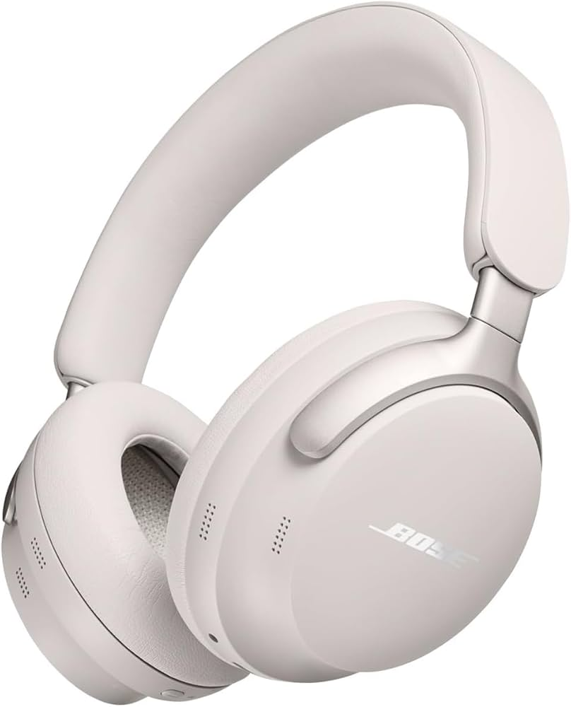
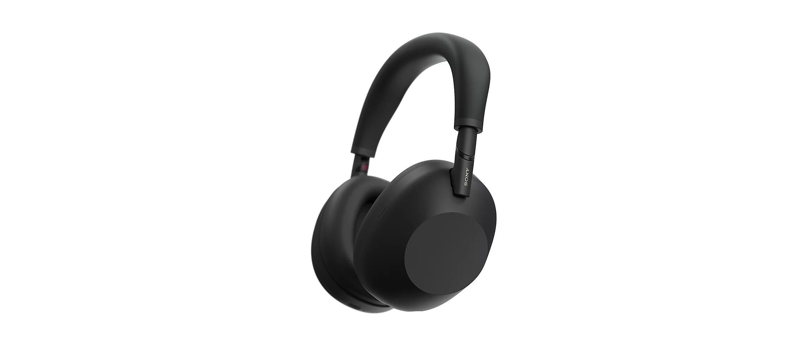
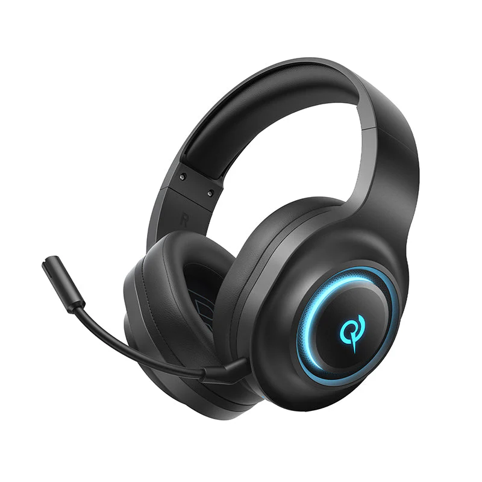

Guia 2026: Os 5 Melhores Fones de Ouvido Bluetooth para Comprar Hoje
Escolher um fone de ouvido em 2026 vai além da qualidade sonora. Hoje buscamos o equilíbrio perfeito entre cancelamento de ruído ativo (ANC), durabilidade de bateria e integração com assistentes virtuais. Após semanas de testes, listamos abaixo os modelos que realmente valem o investimento.
Bose QuietComfort Ultra
O Bose Ultra é o atual rei do mercado. Ele introduz o "Modo Imersivo", que faz a música parecer que está vindo de caixas de som à sua frente, e não de dentro do seu ouvido. O cancelamento de ruído continua sendo o melhor do mundo, capaz de silenciar até os ambientes mais caóticos.
Onde comprar com segurança:
Ver Preço no Mercado Livre ➔Apple AirPods Max (USB-C)

Para usuários de iPhone, não há escolha melhor. A integração com o ecossistema Apple é perfeita, permitindo trocar o áudio do iPhone para o Mac instantaneamente. A nova versão 2026 conta com carregamento USB-C e novas cores, mantendo o áudio espacial que é referência na indústria.
Melhor oferta disponível:
Ver Oferta no Mercado Livre ➔Sony WH-1000XM5
O Sony XM5 é o fone mais inteligente da lista. Ele consegue detectar quando você começa a falar e pausa a música automaticamente. Além disso, possui uma das melhores qualidades de microfone para chamadas de vídeo e ligações, filtrando todo o ruído de fundo.
Confira o preço atualizado:
Ver Preço no Mercado Livre ➔Bose QuietComfort Wireless

Se conforto é sua prioridade número um, este é o fone. Com almofadas extremamente macias e uma pressão lateral mínima, ele é perfeito para quem trabalha 8 horas por dia ou faz voos longos. Mantém a assinatura sonora lendária da Bose com um preço mais acessível que o modelo Ultra.
Garanta o seu com desconto:
Ver na Loja Oficial ML ➔QCY H3 ANC
O "matador de gigantes". O QCY H3 prova que você não precisa gastar milhares de reais para ter um bom cancelamento de ruído. Ele oferece uma construção sólida, aplicativo para equalização e uma bateria que dura até 60 horas. É a escolha definitiva de custo-benefício para 2026.
O melhor custo-benefício:
Comprar com Menor Preço ➔